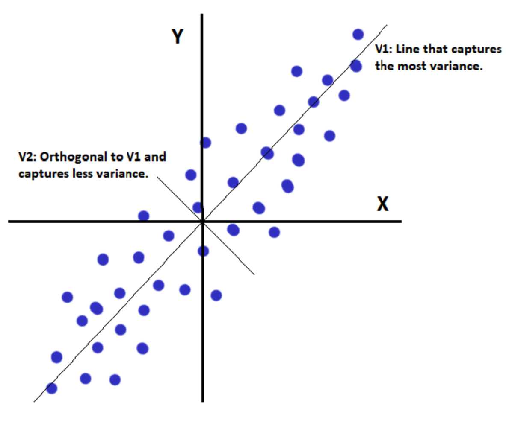

Multivariate Analysis
A dataset with n objects and p variables, where n > p, is an ideal case for use of multivariate statistics. The main goals of this are to quantify the distribution of this data in p-space, reduce the number of variables if possible, investigate dependencies between variables, and predict the location of future objects.
- Minkowski Metric (Distance): Measures distance between points \(x=(x_1,\dots,x_p)\) and \(y=(y_1,\dots,y_p)\):
\[
D_m(x,y) = \left(\sum_{i=1}^{p} |x_i - y_i|^m\right)^{1/m}
\]
Special cases:
- m=1: Manhattan distance \(D_1 = \sum_i |x_i - y_i|\)
- m=2: Euclidean distance \(D_2 = \sqrt{\sum_i (x_i - y_i)^2}\)
- m → ∞: Chebyshev distance \(D_\infty = \max_i |x_i - y_i|\)
- Multiple Linear Regression: Models a response as a linear combination of predictors.
\[
Y = \beta_0 + \beta_1 X_1 + \dots + \beta_p X_p + \varepsilon
\]
Some notes include about multiple linear regression:
- Assumes linearity, independence, constant variance, and normal errors.
- Partial effects are interpreted while holding others constant.
- Multicollinearity inflates variances of \(\hat{\beta}_i\).
- Principal Component Analysis (PCA): Reduces dimensionality while preserving variance.
- Standardize data (mean 0, optional unit variance).
- Covariance matrix: \(\mathbf{S} = \frac{1}{n-1}\mathbf{X}^\top\mathbf{X}\)
- Eigen-decomposition: \(\mathbf{S} = \mathbf{V}\boldsymbol{\Lambda}\mathbf{V}^\top\)
- Principal components: \(\text{PC}_k = \mathbf{X}\mathbf{v}_k\)
- Proportion of variance explained: \(\text{PVE}_k = \frac{\lambda_k}{\sum_i \lambda_i}\)
Components are orthogonal; used for visualization, noise reduction, and high-dimensional data. Let's see an image of how we can visualize the change in axes.

- Factor Analysis (FA): Explains correlations among observed variables, specifically shared variances (unlike PCA, which explains total variance).
- Canonical Correlation Analysis (CCA): Finds linear combinations of two sets of variables (\(\mathbf{X}\) and \(\mathbf{Y}\)) that maximize correlation. This measures shared structures between two multivariate datasets, where the first canonical pair has the most cross-covariance, subsequent pairs are orthogonal.